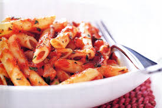

Tomato Pasta

DESCRIPTION
This recipe uses basic ingredients and focuses on building flavor in the sauce
for a delicious and satisfying meal. You can easily adapt it with additional herbs,
spices, or vegetables based on your preferences.
INGREDIENTS
- 1 tablespoon olive oil
- 1 small onion, chopped
- 2 cloves garlic, minced
- 1 (14.5 ounce) can crushed or diced tomatoes
- 2 tablespoons tomato paste (optional, for richer flavor)
- ½ cup water or vegetable stock
- 8 ounces pasta of your choice (e.g., spaghetti, penne, rigatoni)
- Salt and freshly ground black pepper to taste
- Fresh basil leaves for garnish (optional)
-
Grated Parmesan cheese for serving (optional)
STEPS
-
Sauté Aromatics: Heat olive oil in a large skillet or pot over medium heat. Add chopped onion and sauté until softened and translucent, about 5 minutes. Add minced garlic and sauté for 1-2 minutes until fragrant, being careful not to burn it.
-
Build the Sauce:
If using, add tomato paste and cook for 1 minute, stirring constantly. Stir in the crushed or diced tomatoes, water or vegetable stock, salt, and pepper. Bring to a gentle simmer.
-
Cook the Pasta:
While the sauce simmers, bring a large pot of lightly salted water to a boil. Cook the pasta according to package directions until al dente (tender but firm to the bite). Remember to save ½ cup of the pasta water before draining the pasta, as it can be used to adjust the sauce consistency later.
-
Combine & Finish:
Drain the pasta and add it directly to the simmering tomato sauce. Toss to combine and cook for a few more minutes, allowing the pasta to absorb some of the sauce's flavor. If the sauce seems too thick, add a splash of the reserved pasta water to reach your desired consistency.
-
Serve:
Transfer to plates, garnish with fresh basil leaves if using, and top with grated Parmesan cheese to taste. Serve immediately and enjoy!